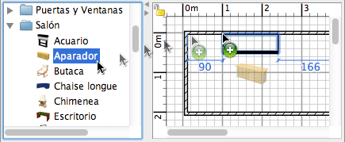

| Añadiendo puertas, ventanas y mobiliario | |||
Para añadir mobiliario a tu casa, Arrastra y suelta uno o más elementos de mobiliario desde el catálogo al plano de la casa o a la lista del mobiliario.  Debes seleccionar algunos elementos del catálogo, luego elegir Mobiliario > Añadir a casa o picar en la herramienta añadir a la casa.
Cuando las piezas son añadidas a la lista del mobiliario o añadidas
mediante el menú Mobiliario > Añadir a la casa, la ubicación
de su esquina superior izquierda se encuentra en el punto (0, 0). Los elementos añadidos a la casa son seleccionados y dibujados simultáneamente en la lista de mobiliario, en el plano y en la vista 3D. Durante el tiempo de carga del modelo 3D, los elementos añadidos son representados como una caja blanca en la vista 3D. |
|